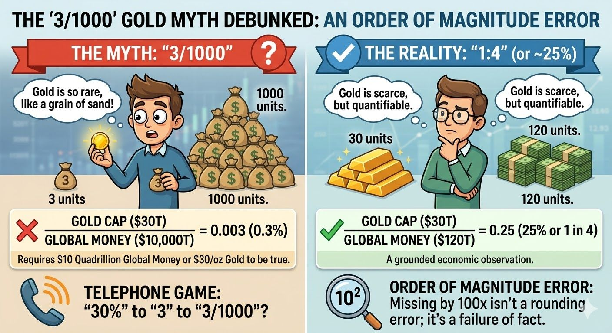

1. The map was drawn for the factory age
Classical left analysis is a beautiful machine built for one era: the industrial one. It assumes a visible factory, a mass proletariat standing shoulder to shoulder, and a bourgeoisie that owns the smokestacks. Its tools — the strike, the union, collective bargaining, the seizure of the means of production — all assume that production is a place you can occupy.
That assumption is quietly expiring. The means of production have gone intangible: data, models, platforms, network effects, and algorithms. You cannot occupy a data center that you cannot enter, and you cannot strike against a recommendation engine that never sleeps. When the factory dematerialises, the playbook written to seize it loses its grip.
2. Labor fragmented into a million sole traders
The mass proletariat dissolved. In its place: gig workers, freelancers, and contractors — each a firm of one, each negotiating an individual contract, each optimising their own tax position. Solidarity is structurally hard when every worker is legally a business.
Look at the texture of modern work below. A contractor isn't asking a union steward how to organise — they're asking an AI whether they can hold two "inside IR35" contracts at once. The question itself is the evidence: the worker is atomised, self-managed, and advised by a machine. The old left has no organising surface here. There is no shop floor — only a chat window.
3. The inherited "facts" are often off by orders of magnitude
Mass movements run on folk-economics — sloganised statistics passed hand to hand like a game of telephone. The trouble is that, in an age where anyone can check the magnitudes, those slogans get audited. And they frequently fail the audit by 100x.
The "3/1000" gold-scarcity myth below is a clean example: a confident, repeated "fact" that turns out to be off by two orders of magnitude (the grounded figure is closer to 1:4). When a movement's foundational numbers miss the real world by a factor of a hundred, its prescriptions inherit the error. Authority built on bad arithmetic does not survive contact with a calculator — or with an AI that can run the calculation instantly.

4. AI collapses the line between labor and capital
The dialectic that powered the old left was clean: capital (thesis) versus labor (antithesis). AI smudges that line. The same technology is simultaneously a tool the worker wields as capital — the contractor consulting an AI, the freelancer shipping work no team could before — and the force that automates the worker out of existence.
You cannot cleanly stand on one side of a barricade when the weapon is in everyone's hand. The worker who uses AI to do the work of five is both empowered labor and an instrument of capital's downward pressure on the other four.
5. The real new conflict: who owns the models
The emerging fault line is not bourgeoisie versus proletariat. It is those who own and steer the models, the data, and the platforms versus everyone whose labor, attention, and output quietly trains them. This is the AI Era at the top of the dialectical pyramid — a new thesis demanding a new antithesis.
The old left "has a hard time" not because its moral concerns about power and exploitation are wrong — they may be more relevant than ever — but because its map is from a previous stage of the dialectic. Fighting platform capitalism with factory-era tactics is like bringing a picket line to a server farm. The synthesis of the AI era will need categories the twentieth century never had to invent.
"Each stage of history is overthrown by the contradictions it creates. The left's tragedy is that it mastered the contradictions of the factory just as capitalism moved them into the model."
See how this fits the full five-stage dialectical progression — from primitive communism to the AI era.
Explore the Dialectical Pyramid →